Metadatenworkflows mit Metafacture erstellen und verwalten
Petra Maier
&
Katinka Tauber
&
Pascal Christoph
Offene Infrastruktur,
Hochschulbibliothekszentrum NRW (hbz)
Hands-on Lab
Studiengang Bibliotheks- und Informationswissenschaft an der HTWK Leipzig
im Modul „Metadaten und Metadatenmanagement“
bei Prof. Dr. Manuel Bärwald
Leipzig, 11. Januar 2024
https://slides.lobid.org/2024-01-metafacture-workshop/ :
(PDF)

Agenda
- Einführung & Kontext
- Metafacture-Workflows 10 min Pause ☕
- Transformieren 10 min Pause ☕
- Exkurs: Anreicherung / Exkurs: Conditionals
- Ausblick, Fragen & Diskussion
Code of Conduct
Falls alle einverstanden sind, duzen wir uns.
Wir möchten für alle gleichermaßen ein einladendes und unterstützendes Umfeld schaffen. Dazu gehört ein höflicher und respektvoller Umgangston.
Bei Fragen, Schwierigkeiten oder sonstigen Wortmeldungen nutzt den Chat oder die Handhebefunktion. Es ist ein Workshop: Wortmeldungen und aktive Beteiligung sind willkommen.
Falls etwas nicht funktioniert: bitte melden - meist lernen dadurch alle etwas!
Ansonsten: am besten das Mikro stumm schalten, um überflüssige Geräusche zu vermeiden.
1. Einführung & Kontext
Workflow: Extract, Transform, Load (ETL)
Quelle: https://github.com/culturegraph/culturegraph-workflow/blob/master/docs/src/docs/asciidoc/manual.adoc
Transformationsprozesse in der Praxis
Transformationen von Metadaten gehören zu Routineaufgaben wissenschaftlicher Bibliotheken.
Es gibt viele unterschiedliche Methoden, die meist Programmierkenntnisse voraussetzen.
Datentransformationen werden oft im Zusammenspiel von Fachabteilungen & IT umgesetzt, verbunden mit größerem Kommunikationsaufwand.
Existierende Transformationsprozesse sind meist nicht öffentlich und somit nicht nachnutzbar.
Das heißt:
Es gibt großes Potenzial, wiederkehrende Aufgaben kollaborativer und effizienter zu gestalten.
ETL: Anwendungsbeispiele
Datenaggregationz.B. aus unterschiedlichen Quellen
Systemmigration, z.B. nach Alma oder Folio
Datenaufbereitung, z.B. zur Visualisierung mit Kibana
Datenanreicherung, z.B. Ergänzung von Daten aus Wikidata
Datenanalyse, z.B. Feldabdeckung im Katalog
Metadatenanalyse/-transformation
Tools (Auswahl)
MarcEdit OpenRefine
Regular Expressions
Perl Catmandu Metafacture
→ je nach Ausgangslage (Datenformat, Quelle, Datenmenge etc.), Verfügbarkeit von Software, Vorhandensein etablierter/existierender Workflows, Kenntnis und persönlicher Vorliebe
Wo wir Metafacture nutzen
Transformation der Alma MARC-XML Daten des Verbundkatalogs zu JSON-LD (lobid.org)
Metadaten aus verschiedenen Quellen im OER Suchindex (OERSI) aggregieren (oersi.de)
Transformation der Daten der Rheinland-Pfälzischen Bibliographie (rpb.lobid.org)
Transformation der ZDB (PICA), DBS (CSV) und Wikidata (CSV) Daten (lobid-organisations)
Dokumentation
Beispiele: produktiv in OERSI (diverse Web-Quellen → JSON), für ALMA hbz-Verbundkatalog (ALMA MARC → JSON) und Rheinland-Pfälzische Bibliographie (Allegro → JSON)
Integration-Tests: Input, Flux, Fix, Output als Dateien wie bei Real-World-Setup
Was ist Metafacture?
Ein vielseitiges ETL-Werkzeug zur Verarbeitung von semi-strukturierten Daten mit dem Fokus auf Bibliotheksdaten
nutzbar als Kommandozeilentool, als Java/JVM library,
für Batch-Verarbeitung oder on-the-fly
offenes Framework: Weiterentwicklung, Wiederverwendung und Austausch (von einzelnen Modulen und ganzen Workflows)
Warum Metafacture?
Metafacture ist performant 🚀
Beispiel ETL bei 50 GB MARC-XML Input nach lobid JSON-LD (28 M Dokumente):
- 14h mit Fix (7h mit Morph)
- auf einem 10 Jahre alten Server
- u.a. dank Multithreading
Metafacture-Historie
2011: Start der Entwicklung durch DNB im Rahmen von Culturegraph; damals schon Austausch mit dem hbz
2013: Umzug auf GitHub, Open-Source-Projekt geworden
2019: Mit der Zeit immer weniger DNB-Ressourcen für Metafacture, hbz wird Maintainer
ETL
 -
-Aus: culturegraph, https://github.com/culturegraph/culturegraph-workflow/blob/master/docs/src/docs/asciidoc/manual.adoc
Wie Metafacture funktioniert
Grundidee: Daten fließen durch mehrere Module:
→ read → decode
→ transform → encode → write →
Jedes Modul erwartet Input eines bestimmten Typs und erzeugt Output eines bestimmten Typs
Verschiedene Formate werden unterstützt (z.B. METS/MODS, MARC), erweiterbares Framework für eigene Formate
Mittels Kombination einzelner Module bauen wir einen Workflow
Metafacture-Module
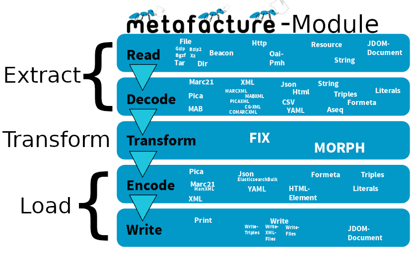Autoren: Tobias Bülte & Pascal Christoph (2021-2023)
2. Metafacture-Workflows
Ein Workflow
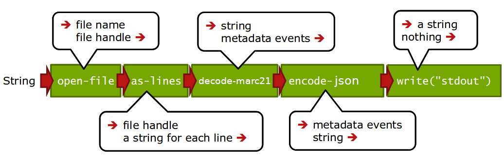 Aus: Christoph Böhme, nach http://swib.org/swib13/slides/boehme_swib13_131.pdf
"dateiName"|open-file|as-lines|decode-marc21|encode-json|write("stdout");
(Beispiel-Inhalt einer "flux" Datei)
Workflows konfigurieren und ausführen
Workflows können in Flux (einer speziellen Konfigurationssprache) oder mit Java (typsicher über Java Generics) bearbeitet werden
Flux-Workflows können in einem Texteditor editiert und auf der Kommandozeile ausgeführt werden; Java-Workflows funktionieren wie andere Java-Komponenten
Der Workshop führt in die Nutzung der Flux-Workflows ein, zum Ausführen verwenden wir den Metafacture Playground
Metafacture Playground
Webbasierte Oberfläche zum Ausprobieren und Austauschen von Metafacture-Workflows
Ziel: Einstiegshürde für Metafacture senken, keine Installation o.Ä. notwendig
Für Entwicklung, Dokumentation, Tutorials, Workshops
Mitarbeit erwünscht: Metafacture Playground auf Github
Funktionen des Playgrounds
Funktionen des Playgrounds I
Load Examples
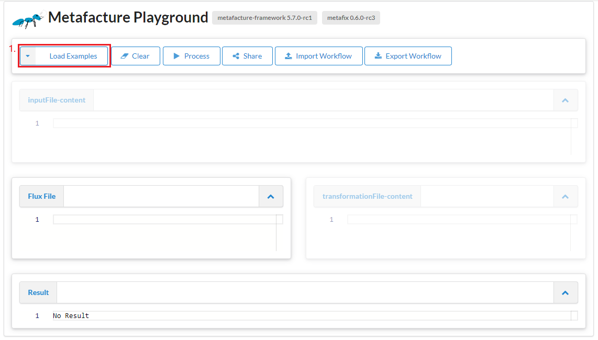Funktionen des Playgrounds I
Load Examples
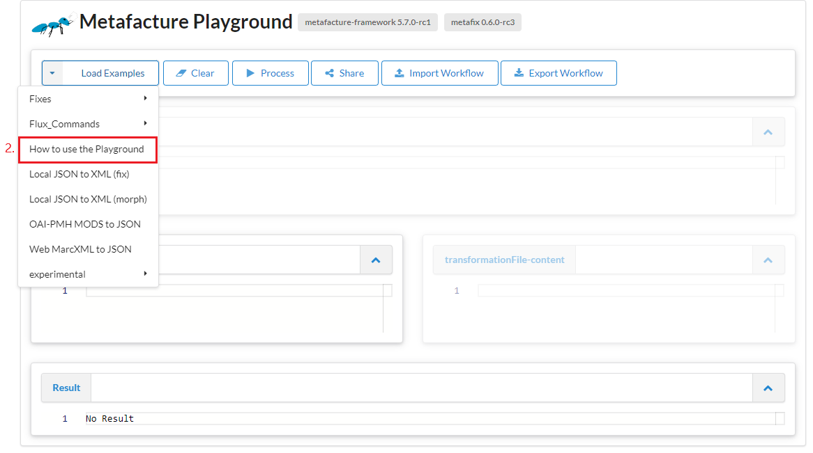Funktionen des Playgrounds I
Load Examples
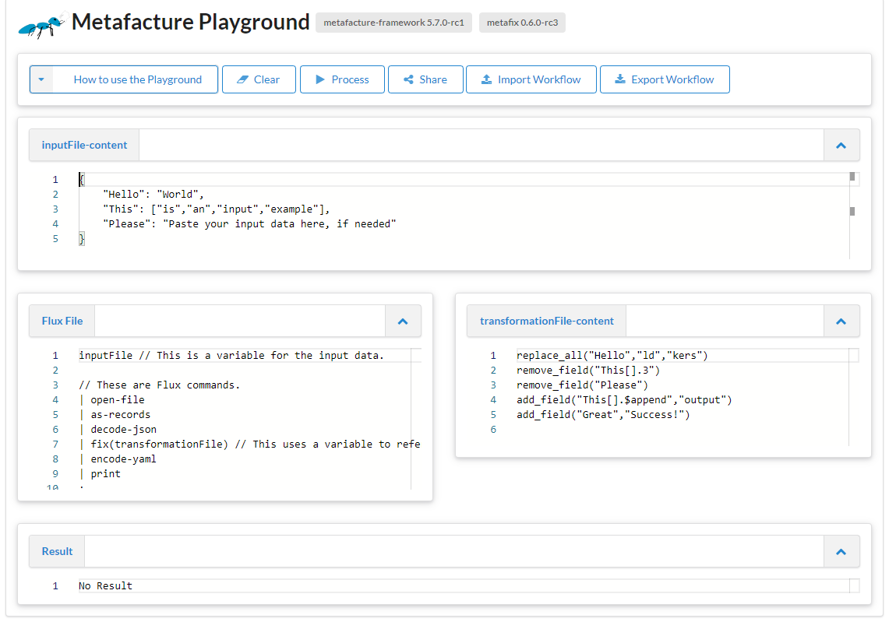Funktionen des Playgrounds II
Clear
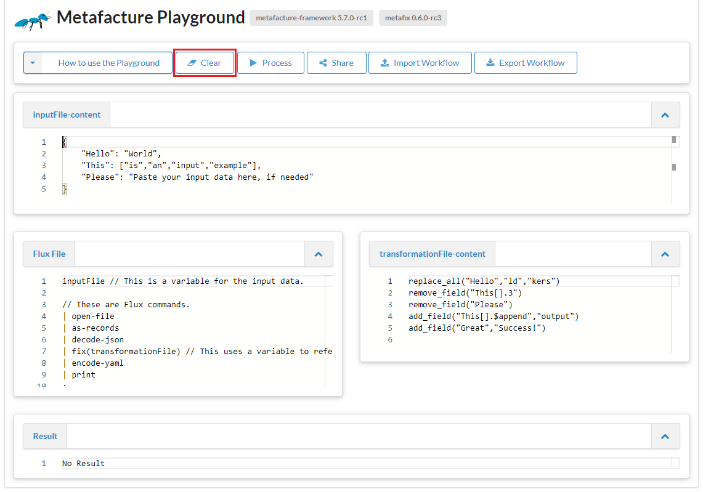Funktionen des Playgrounds II
Clear
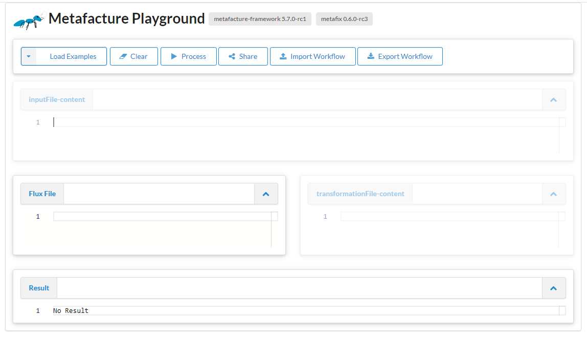Funktionen des Playgrounds III
Process

Funktionen des Playgrounds III
Process

Funktionen des Playgrounds III
Process

Funktionen des Playgrounds IV
Share
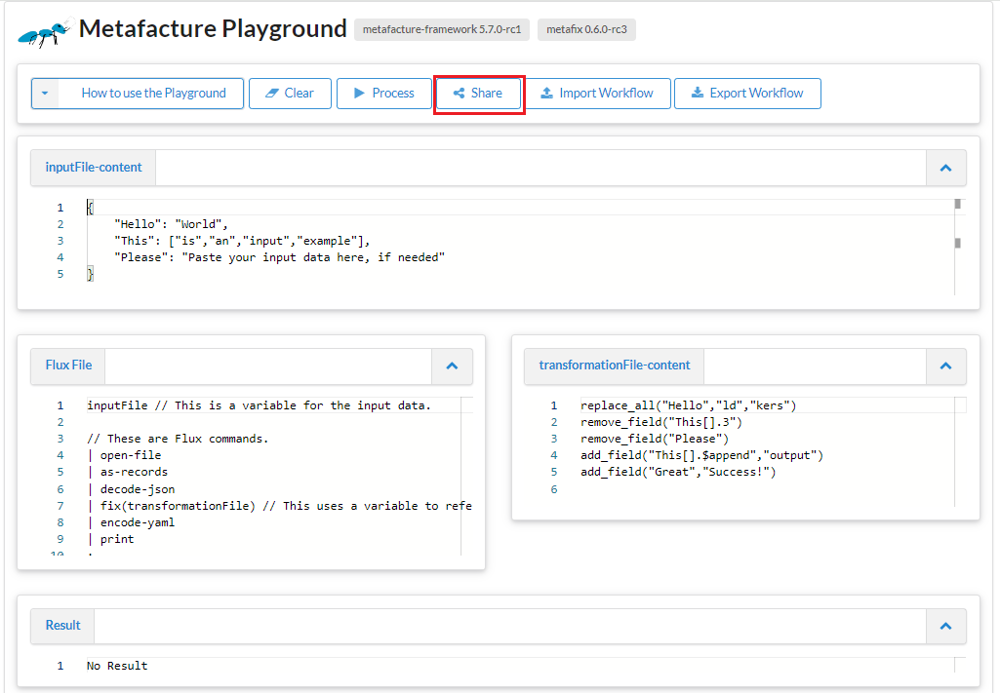Funktionen des Playgrounds IV
Share
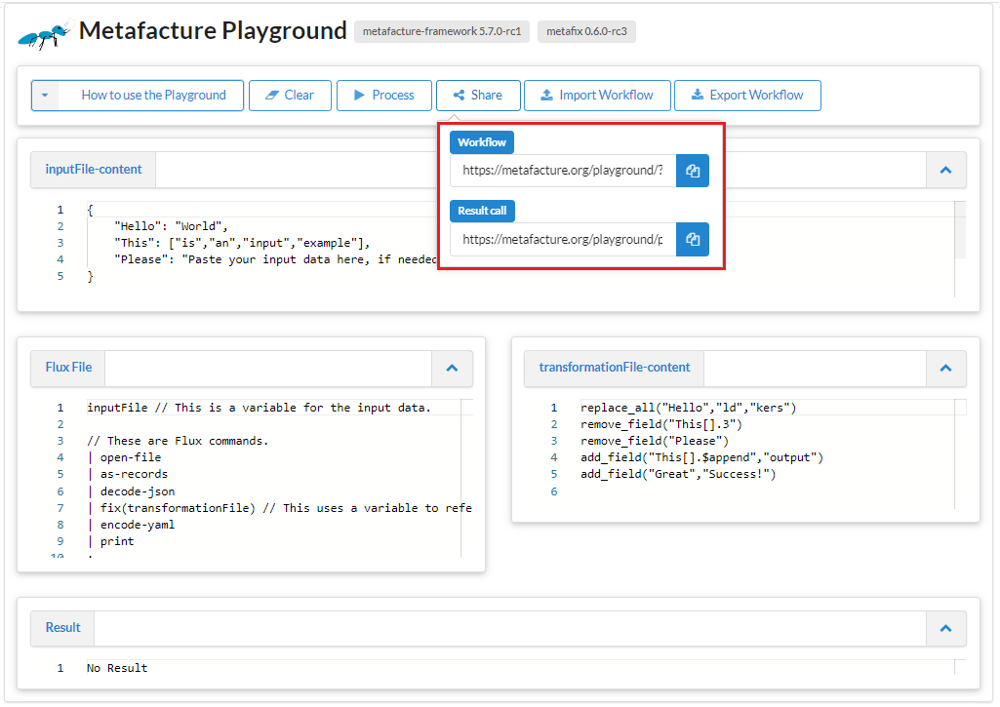Funktionen des Playgrounds IV
Share
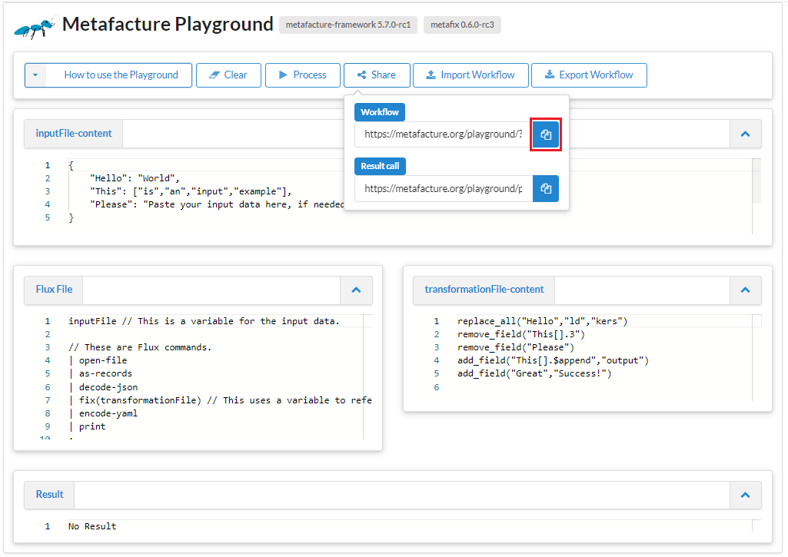Funktionen des Playgrounds IV
Share
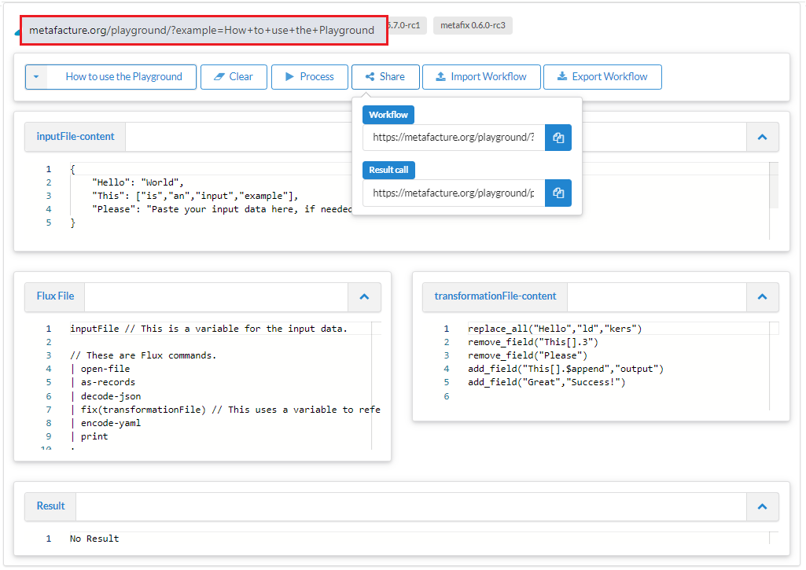Funktionen des Playgrounds V
Export Worflow
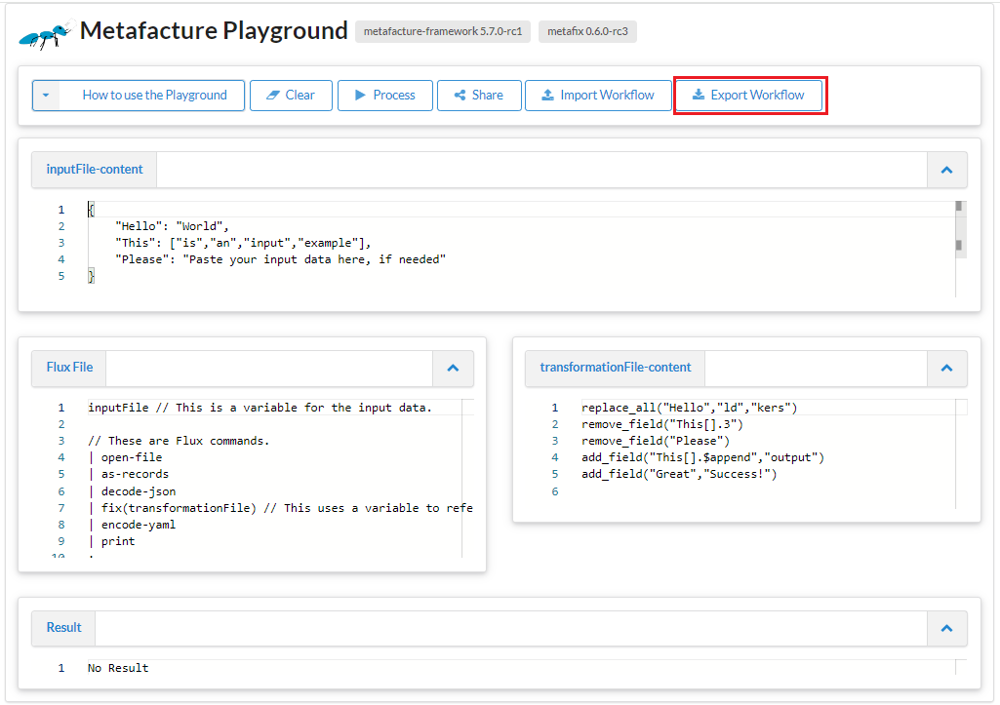Funktionen des Playgrounds V
Export Worflow
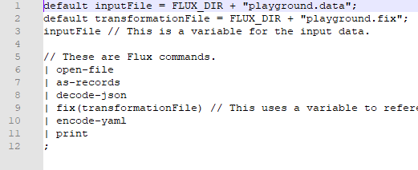Funktionen des Playgrounds V
Import Workflow
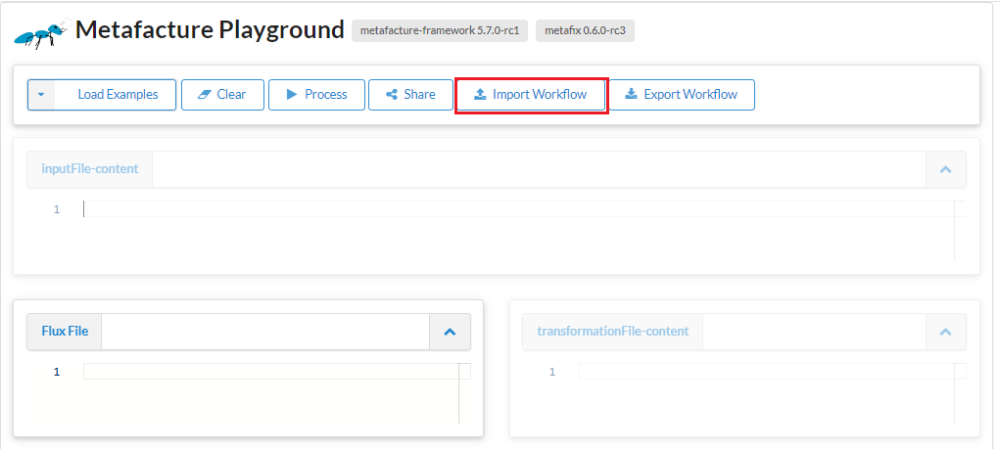Funktionen des Playgrounds V
Import Workflow
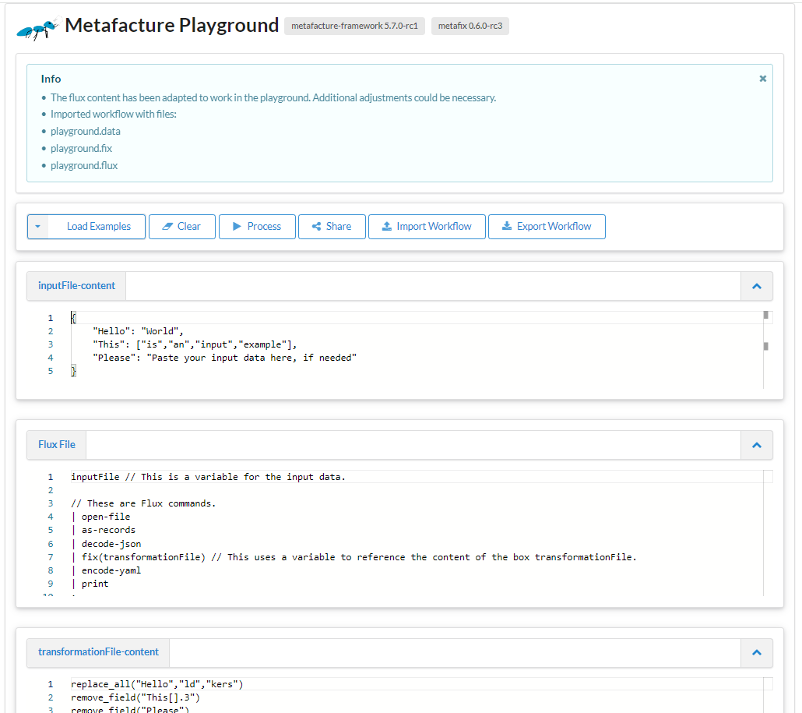Übung 1
Erste Schritte im Playground
Bevor wir mit der ersten Übung starten...
... ein paar Hinweise/Tipps/Hilfestellungen:
die wichtigsten Flux-commands für heute:
Übung 1 - Daten einlesen & ausgeben
wir brauchen den Link zum MARC-XML dieses Records: https://d-nb.info/1251888070/about/marcxml
→ dieser URL wird in der Flux-File als Pfad zu den Daten angegeben
"https://d-nb.info/1251888070/about/marcxml"
Übung 1 - Daten einlesen & ausgeben
wir möchten Daten direkt von einer http Ressource öffnen und benötigen daher...?
parsing der xml-Daten und lesen der Daten erfolgt in 2 Schritten ...
ein Blick in die Doku: "Parsing" der XML-Datei und "Lesen" des MARC-XML
probiert im Playground folgenden Ablauf selbst aus
"https://d-nb.info/1251888070/about/marcxml"
| open-http(accept="application/xml")
| decode-xml
| handle-marcxml
| encode-marcxml
| print
;
Übung 1 - Daten einlesen & ausgeben
ändert die Ausgabe der Daten in JSON ab
wie kann man das JSON leichter lesbar ("schöner") ausgeben?
💡Blick in die Doku der Flux-commands hilft
Wer fertig ist: bitte im Status "Daumen hoch" setzen
Pause ☕
3. Transformieren
ETL: Transformation
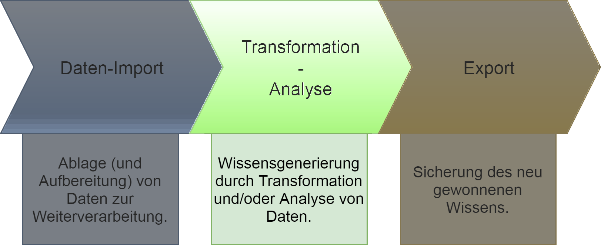Transformieren
Manipulation von Feldnamen und -werten; filtern, kombinieren, trennen, normalisieren, anreichern etc.
Änderung des Datenformats, der Hierarchie
Normalisierung bspw. durch Feldwerte aus sog. Lookup-Tabellen (Crosswalks z.B. Ortsname als Freitext → kontrollierte Vokabulare)
"Vorarbeiten" der Datentransformation: Analyse
Überblick über vorhandene Felder verschaffen (hierfür ist bspw. das Flux-Command "list-fix-paths" hilfreich)
"https://d-nb.info/1251888070/about/marcxml"
| open-http(accept="application/xml")
| decode-xml
| handle-marcxml
| list-fix-paths(count="false")
| print
;
Ggf. Metadatenstandard vorab anschauen (Pflichtfelder, Wiederholbarkeit, Struktur)
Feldinhalte (in Stichproben) anschauen
"Vorarbeiten" der Datentransformation: Analyse
Überblick über vorhandene Feldinhalte verschaffen
→ schaut in der Flux-Commands-Übersicht, womit und wie man die Inhalte analsieren kann. (2 min)
Ausgeben eines bestimmten Feldinhalts:
"https://d-nb.info/1251888070/about/marcxml"
| open-http(accept="application/xml")
| decode-xml
| handle-marcxml
| list-fix-values("650 7.*.a")
| print
;
oder auch die Inhalte aller Felder mit list-fix-values("*")
Transformationsmodul Fix
eigene Entwicklung
Catmandu-Fix-artig
Record-basiert
Metafacture Fix: Ziele
Erleichterung der Transformationskonfiguration
Anknüpfung an existierende Konfigurationssprache aus Catmandu
Vergrößerung der Zielgruppe um Bibliothekar:innen und andere Metadatenfachleute
Metafacture Fix: Dokumentation
Eine Einführung in Metafacture Fix bietet der Fix User Guide
Darüber hinaus lohnt ein Blick ins "Kochbuch"
Bevor wir mit der zweiten Übung starten...
die wichtigsten Fix-Funktionen für heute:
Einbinden der Fix in die Flux im Playground: entweder mit fix(transformationFile) → Fix in das entsprechende Feld ODER direkt in das Flux-Command fix("...")
Path wildcards:
* →1 & mehr Zeichen ; ?→ genau 1 Zeichen
Kurzes Recap MARC21-Felder
| LEADER 06 - Type of record (NR) | a - Language material m - Computer file ... |
| 020 - ISBN (R) | Ind1; Ind2 $a ISBN |
| 245 - Title Statement (NR) | Ind1 (NE); Ind2 (Nichtsortierzeichen); $a Titel ; $b Zusatz ; $c Verantwortlichkeitsangabe |
| 264 - Production, Publication, Distribution, Manufacture, and Copyright Notice (R) | Ind1; Ind2 $a Entsehungsort ; $b Verlagsname ; $c Entstehungsjahr |
| 650 - Subject Added Entry - Topical Term (R) | Ind1; Ind2 $a Sachbegriff |
| 700 - Added Entry - Personal Name (R) | Ind1; Ind2 $a Personenname; $d Datumsangaben; $e Funktionsbezeichnung; $4 Code der Funktionsbezeichnung |
Übung 2 - Metafacture Fix: Pfade
Um die verschiedenen Elemente und Felder für die Transformation anzusteuern, benötigt man die Pfade
Oberste Ebene: z.B. id
Unterfelder: z.B. title.subtitle
Wiederholte Felder werden als Listen (arrays) mit Index-Nummer angegeben: z.B. creator.1.name.firstName
Übung 2 - Metafacture Fix: Pfade
💡Wiederholte Felder werden als "arrays/Listen" gelesen - was heißt das in der Praxis?
| Feldname einfach | Feldname wiederholt |
|---|---|
inputFile
|
inputFile
|
Übung 2 - Metafacture Fix: Pfade
Basis ist der Beispieldatensatz aus Übung 1 (im Playground)
Vorgehen "Titel auslesen": → Pfad bestimmen → Feldinhalt in ein neues Feld "title" kopieren → mit retain nur diesen Feldinhalt ausgeben lassen
💡Hilfestellungen:
- retain → "At the moment this only works with top-level elements". D.h. dass derzeit nicht direkt ein Pfad angesprochen werden kann, daher muss man erst copy_field nutzen.
- Feld 245 hat 2 Indikatoren
Wer fertig ist: bitte im Status "Daumen hoch" setzen
Übung 2 - Metafacture Fix: Pfade
Ausgeben des gesamten Title statement
Lösung für die Übung: Nur Titel ausgeben
Sieht es bei jemandem anders aus?
weitere Fix-Funktionen
do list
Iteriert über eine Liste (zur Erinnerung: wiederholte Felder werden als Listen interpretiert!)
Durch das Setzen eines Variablennamens für das Wurzelelement können die zugehörenden untergeordneten Elemente angesprochen werden.
wird mit "end" geschlossen
do list
inputFile-Content
{"author": [
{"name": "British Library",
"@type": "Organization"},
{"name": "Ada Lovelace",
"@type": "Person"},
{"name": "Alan Turing",
"@type": "Person"}
]
}
Flux File
inputFile
|open-file
|as-records
|decode-json
|fix(transformationFile)
|encode-yaml
|print
;
TransformationFile-Content
do list(path:"author[]", "var":"$i")
move_field("$i.@type","$i.type")
end
Übung 3 - MARC-XML to DC
Vorarbeiten: wie sollen die Felder gemapped werden?
MARC21 und DC sind verbreitete Standards; es gibt bereits sog. Crosswalks (z.B. LoC), die zur Orientierung herangezogen werden können
Übung 3 - MARC-XML to DC
wir mappen
| MARC21 | DC |
|---|---|
| 020 $a | dc:identifier |
| 245 $a $b | dc:title |
| 700 $a | dc:creator |
| 264 $c | dc:date |
| 264 $b | dc:publisher |
| LDR Pos. 7 | dc:type [*] |
| 650 $a | dc:subject |
[*] empfohlen wird die Verwendung v. kontrolliertem Vokabular wie bspw. DCMI TYPE Vocabulary
Übung 3 - MARC-XML to DC
Nehmen wir wieder den Beispieldatensatz aus Übung 1
Wie in Übung 2 könnt Ihr das Entstehungsjahr und den Verlag in ein Feld "date" bzw. "publisher" kopieren
Wer fertig ist: bitte im Status "Daumen hoch" setzen
Übung 3 - MARC-XML to DC
wir sollten nun alle diesen Stand haben
die Felder 700$a, 020$a und 650$a müssen etwas anders abgearbeitet werden
die ISBN(s) und auch die wiederholten Felder werden in einem Array ausgegeben - auch wenn es nur 1 gibt
benutzt set-array und array-Wildcard $append - probiert es aus (und schaut ggf. in die Doku)
Wer fertig ist: bitte im Status "Daumen hoch" setzen
Übung 3 - MARC-XML to DC
für das Mappen des Leader Pos. 7 auf Kontrolliertes Vokabular → lookup
Zuerst: map erstellen entweder in der Fix oder in einer separaten Datei.
Key-value-pairs für die Werte: a - Language material → in DC "text"; m - Computer file → in DC "dataset"
put_map("ldr_type", key1:"value1",...)
Wer fertig ist: bitte im Status "Daumen hoch" setzen
Es sollte so aussehen:
put_map("ldr_type", "a":"text", "m":"dataset")
Übung 3 - MARC-XML to DC
Wie kommt man aber an die Pos. 7 im Leader?
Hierfür kann man Reguläre Ausdrücke in Kombination mit der Fix-Funktion replace_all nutzen
replace_all("type", "^.{6}(.).+$","$1")
Übung 3 - MARC-XML to DC
Von JSON zu JSON-LD
Pause ☕
4. Exkurs: Anreichern
Lookups auf Tabellen
Einfacher Lookup auf eine zweispaltige tsv Tabelle, die im Web liegtRDF web lookups
In Alma Marc XML haben wir nur die IDs der "DNB Sachgruppen":
<datafield tag="084" ind1=" " ind2=" ">
<subfield code="a">333.7</subfield>
<subfield code="a">621.3</subfield>
<subfield code="q">DE-600</subfield>
<subfield code="2">sdnb</subfield>
</datafield>
Lookup auf "DNB Sachgruppen" um mit skos:notation und skos:prefLabel anzureichern
4. Exkurs: Conditionals
Bedingte Anweisungen werden häufig benötigt bei der Transformation
in Fix eingeleitet mit if oder unless und geschlossen mit einem end
Das Abarbeiten mehrerer Bedingungen wird durch ggf. elsif / else realisiert
bspw. "if exists" / "if any_match"
...
if any_match("$auth","^http.+$")
copy_field("$auth","contribution[].$last.agent.id")
elsif any_match("$auth","^\\(DE-588\\).+$")
copy_field("$auth","contribution[].$last.agent.gndIdentifier")
replace_all("contribution[].$last.agent.gndIdentifier", "\\(DE-588\\)","")
else
add_field("contribution[].$last.agent.gndIdentifier","keine GND-ID")
end...
Ausblick
Fix & Playground weiterentwickeln
Fix-Funktionalität erweitern, Fehler beheben, Catmandu-Kompatibilität erhöhen
Playground weiter verbessern, z.B. mehr Hinweise im Editor, integrierte Dokumentation (was gibt es für Module, wie kann ich sie kombinieren)
5. Ausblick, Fragen & Diskussion
Ausblick
Fix & Playground weiterentwickeln
Fix-Funktionalität erweitern, Fehler beheben, Catmandu-Kompatibilität erhöhen
Playground weiter verbessern, z.B. mehr Hinweise im Editor, integrierte Dokumentation (was gibt es für Module, wie kann ich sie kombinieren)
Standards nutzen und aufbauen
SKOS Lookups (zum Andocken an SkoHub Vocabs) ✓
Entity Reconciliation mit OpenRefine-kompatiblen Diensten
Fix-Standardisierung, s. https://github.com/elag/FIG
ETL Hub
ETL: Extract, Transform, Load
mehr Kollaboration, Teilen & Auffinden von Workflows ermöglichen (nicht nur für Metafacture)
Entwicklung von Best Practices zur Paketierung und Beschreibung von ETL-Konfigurationen
Aufbau eines ETL Hubs zum Entdecken existierender ETL-Prozesse für die einfache Nachnutzung und Anpassung
Fragen und Diskussion

Feedbackrunde
Immer im Wechsel: etwas Positives, etwas Negatives
Wir starten mit...